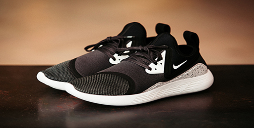
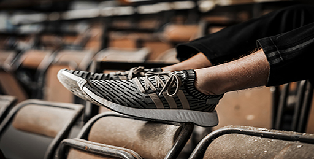
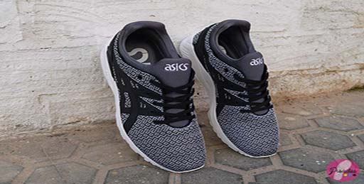

Pocas veces una mirada al pasado es negativa, puesto que puede ayudarnos a entender muchas cosas. Si tomas lo mejor del pasado, lo que ofrezcas para hoy y mañana sólo puede ser bueno. Es la premisa sobre la que han trabajado en Nike para presentarnos su última silueta: LunarCharge.
Con esta silueta, ya lucida por el cantante Tinnie Tempah en los MTV EMAs, se mantiene el puente entre el estilo pretérito y la comodidad actual. Y es que Nike ha revuelto entre sus diseños más exitosos para crear estas LunarCharge. Por ejemplo, en estas nuevas zapatillas se encuentran algunas reminiscencias de las Air Max 90 o las Air Presto, las zapatillas de las que os hablábamos un par de días atrás. Y todo ello, sobre la tecnología Lunarlon como sistema de amotiguación.

Desde hace unos meses, suenan campanas al fondo. Y ese soniquete que tanto resuena viene referida por la llegada de las futuras adidas Originals NMD R2, la revisión de una de las zapatillas más exitosas de los últimos años, que esperamos tener entre nosotros lo más pronto posible.
Para hacer algo menos dura la espera hasta que lleguen a nuestra colección, traemos una espectacular colección de fotografías en las que podremos ver qué tal lucen en los pies. Cuidado que al verlas no se te caigan las babas sobre el teclado…

asics Tiger y Foot Locker se basaron en los dragones japonés para sacar estas Gel Kayano Evo, exclusivas de Foot Locker. El dibujo tejido de las zapatillas está inspirado en los dragones nipones, haciendo así un homenaje al lugar de nacimiento de la firma. Estas asics Tiger Gel Kayano Evo llevan media suela Gel, calcetín sintético y mesh en el upper. Las Stripes del logo de asics son el material sintético termosellado y el talón lleva refuerzos de silicona, un material que últimamente asics Tiger está utilizando mucho en sus zapatillas.